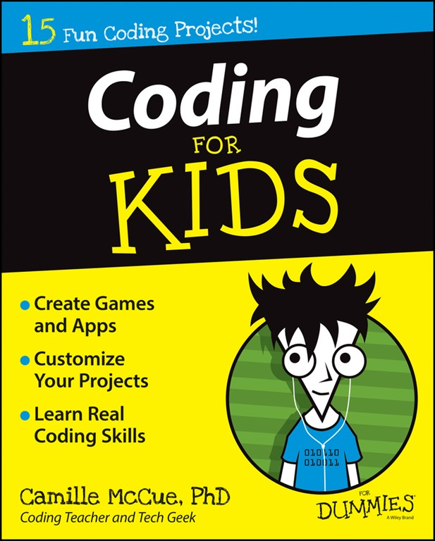

Mi chiamo Matteo Kalcich, ho 18 anni e sono uno studente del liceo Volta indirizzo programmazione. Nel tempo libero faccio sport.

Studio programmazione all'Istituo Tecnico Alessandro Volta a Trieste. I linguaggi fatti sono perlopiù con cenni di html e css.

Oltre a fare sport mi piace molto approfondire argomenti di mio interesse e faccio dei progetti su android e ios usando java e flutter.